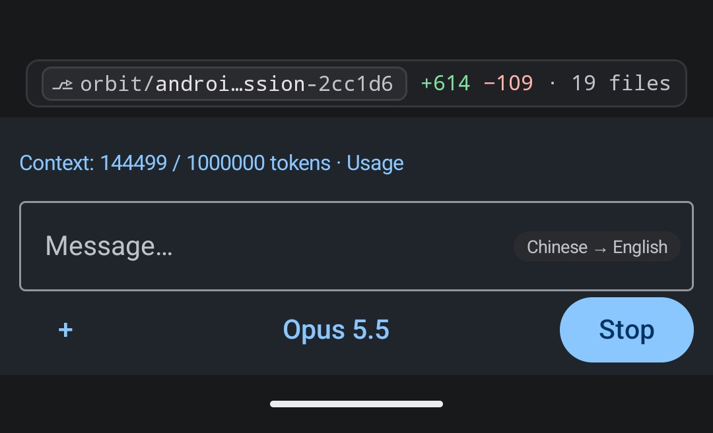

owner 2026-11-19 的截图（①）对比 iOS（②）：Android 的输入框是三块松散的 Material 控件——上方一行原始 token 数、中间一个描边文本框、下方「+ / 居中的模型名 / 大号 Stop 按钮」。 提案（③ 起）把五处改成 iOS 的样子：1一张圆角卡片，2上下文改成工具栏里的小环形表，3权限模式回到工具栏， 4模型名靠右、放不下时先截断，5Send / Stop 改成圆形图标按钮。行为（发送、Stop、长按排队、翻译标签、建议、优化）不变，只改布局。 图中 UI 文案为英文（即将上线的文案），注释为中文。

OutlinedTextField 和下方的散行。文字在上、工具栏在下，文字变长时向上长，+ 和 Send 不动。weight(1f) 的居中拉伸，改成靠右；名字加粗，后面跟灰色的推理强度（“Opus 5.5 High”，同 iOS chipRow；Fast 模式是 “High · Fast”）。放不下时先藏强度，再截断名字。点开仍是今天的「Model and account」对话框。| 文件 | 改什么 |
|---|---|
composer/SessionComposer.kt 203-357 | 卡片容器；OutlinedTextField 换无边框的 BasicTextField（占位、翻译标签、建议照旧）；工具栏 Row：+ 图标、权限模式菜单、模型名、环形表、Optimize、圆形 Send/Stop。ModelChip 去掉 weight(1f)，名字后加 effortLabel（今天只在朗读里），放不下时先去掉它。附件行（203-241 里那段文字行）改成卡片里的缩略图条。 |
composer/ComposerUsage.kt | 上下文行改成环形表（+ 有套餐时的胶囊）；套餐条 + 环的胶囊按自身宽度排，不用 weight（iOS 2f437e668f 修过被挤压后压到邻居的问题）；AlertDialog 换 ModalBottomSheet，行不变；账号池账号名从这一行挪进 sheet 的 Account 行（已有）。 |
composer/PromptOptimizerViews.kt | PromptOptimizeButton 加 compact 形态（40 dp ✦ 圆钮 / 转圈）；先给模型名（带强度）排位，Optimize 再按剩下的宽度选带字还是 ✦（iOS 是 layoutPriority 0.5 < 模型的 1 + ViewThatFits）。两种形态朗读都是 “Optimize” / 忙时 “Optimizing…”，忙时按一下取消。 |
SessionComposer.kt ModelChoices | Permissions 段留着（对话框里也能改），工具栏菜单和它写同一个 permissionMode。 |
test/…/composer/*、androidTest/…/ComposerDeviceTest.kt | 测试找的 composer-send、composer-model、composer-translation-tag 标签不变；按「Stop」「Send」文字找按钮的断言改成按 contentDescription。新加 composer-mode、composer-context。 |
layoutBoard）。